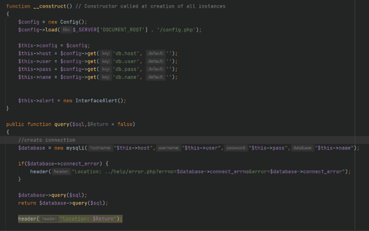

Plans & Progress
Assignment Credit: Jack Harris
Plans & Progress
For our plan for the development of this application we will be sticking extremely closely to the timeframe outline, that will serve as our plan and ensure that we are on track and developing our application to an acceptable standard.
Below I have outlined the progress that we have made for the first few weeks of the timeframe development plan.
Brain Storming Names
For this assessment we have taken great steps in treating it as a real and functional program moving forwarded, we have also had several discussions about continuing development of the web app after this assignment ends. Our plan from the start has been to start developing the web app along side our assessment. One of the steps we took first off was to brainstorm a domain name a register it, this was a name that needed to be simple, short, and easy to remember. We started off by brain storming ideas around the work team.
Choosing Our Top Level Domain
We had some fantastic ideas from Bands, Clans, Pacts but ultimately settled on Crews this choice lead us down the water and navel theme and will have a large impact on our future. After this initial name brain storming phase we moved onto brain storming the TLD (Top Level Domain) for this we ended up settling on the .io TLD, it has a ton of positive association at the moment with startups. One negative of this choice was the additional cost associated with it, .io domains cost around $80 AUD, with .com costing around $30 AUD.
A secondary advantage of going with a .io domain is that it keeps the URL extremely short, for example we can see that crewus.io is a short name than crewus.com or crewus.net, its also more simple and potentially easier for people to remember. We had 2 main choices for name, crewus.io and crewup.io, sadly crewup was already taken so we settled on crewus.io domain name.
Setting Up The Web Hosting
Now we have the domain name we needed to organize hosting for the application, Jacks company Peninsula Interactive provides WordPress and website hosting and was able to step in and provide us free hosting for our site, this hosting has been split into 2 sections one for the main user facing site and one for the main app site, these are at the following subdomains https://crewus.io & https://app.crewus.io, Currently we the customer facing site blank with a placeholder page and will be using the app.crewus.io to host our development site.
The hosting platform is Virtualmin, and it is a robust and complete web hosting panel that allows us to manage our certificates, HTTPS redirects, files and databases all from the one administration panel.
https://peninsulainteractive.com/Branding Development
Noah has spear head our branding and Logos he has spent a great deal of time creating images and power point presentations to cover all the different outcomes and color schemes for this app, these would augment the initial moch up designs that we created during assessment 2.
To start off with Noah has created a in depth power point presentation that displays to the team his thought process whilst developing our main logo, app icon and brand color scheme, this was presented to the group in an awesome in-depth PowerPoint during a couple of our weekly catchup meetings.
Slide 1, Noah introduces the PowerPoint, Its purpose and why branding and logos are important for the success of a new product or business.
Next Noah talks us through the evolution of the font for our logo, he has tried several different styles and themes and explains the advantages of both before proceeding to the next slide. In this screenshot we can see he is showing two versions of fonts and explaining why the right hadn’t font is better, ultimately this came down to font matching our navel theme.
In this next slide we can see Noah has made changes to our colors, more specifically he has swapped our initial blue and yellow to be reversed. The main reason for this he explains is to align with our navel theme, blue representing the ocean and yellow representing land or a boat.
The next slid is Noah is talking about our logo, we initially had created an arrow based on one online, he started elaborating about how our logo is too linear and not representative of the sea and organics ocean, the new design features smooth curved edges as opposed to spikes and sharp cuts, better meeting our brand and theme.
SQL Database Setup
To kick start the creation of the app inline with our timeframe I started work on creating a user and login system, this first involved creating an initial SQL table to house the user records and information. The columns for data I settled on was an auto incrementing SQL id called “id”, this would purely be used as a back up way to track incremental records.
Users records would compose of the following values, “user_id” this is automatically generated number between 1 & 1,000,000, the next value is “user_level” this is the representation of the users administrator status and is a either 0 (Standard Users) or 1 (System Administrator). Next we have the standard user information “user_firstname, user_lastname, user_password, user_email” with “user_name” represenating the system username. “user_photo” is a string value that contains the path to the user profile picture, these are located in /uploads/userphotos/[user_id].png.
Finally we finish with “user_created_at” this is a timestamp created by SQL to represent the time the user was first created in the system.
Database Connection Class
The first class created for the system was the database connection class, this pulls the user database information from a configuration file and uses it to establish a connection to the database server. I used the MySQLi package for this.

We can see in the class above that I have created a query function, this allows us to execute a line of SQL code, to call this function it needs 2 parameters, the SQL code its self and a return address. The return address is import as if we update the database we also want to refresh the page the user is on. For example if we sent a return address of “”./login.php” it after performing the query it will redirect the user to that page.
The database class is simple but effective. The final component to talk about is the error message. We currently have not planned to add any error system so I have a basic error page that the user gets redirected too if an error occurs.
Login Programming
Following this setup & the Database class I commenced work on the “User.php” class file, this would contain all the methods and records pertaining to a user. The first method created was the user creation method, this receives the standard user data from an initial sign up form and creates a user record in the database.
The user code on the signup page is more complicated, it retrieves data from all the post fields and then sends it to the sign-up page. These fields are all marked with a required tag as it ensures the user enters the correct data. We do have plans to integrate proper server side checking but current it is not part of our 15 week time frame.
The final core feature of this sign-up page is for the ability for it to be toggled on or off by the main system config. This means if for example we licensed the software to a company or school and they wanted to control the user account creation we can simple toggle external signup to false and disable it!
The PHP code for this was surprisinly simple, we can see here that if the config->site.showSignUpPage is not true then redirect to the login.php page
Login Session Checking
Finally on all our pages that the user is reqired to be logged in on we call the $user->sessionCheck function to check if the current user session is set and as a result the user is logged in.
Below is a screenshot from the index.php page, simply getting the user data from the user checksession function. Getting this user_data is important as its what allows the page to know all the infromation about the user, are they an administrator?, whats their full name?, ect!
We can see on the user function side of that code that it’s also pretty straight forward, the check session function will see if the user_id is set on the PHP global session variable, if so then it will lookup all the users data from the database and package it into an array before returning it back to the requesting page, finally if the user is not set then it sets the location to the login page and exits the function.
User Profile Page
Here we can see a screenshot of our new user profile page, the PHP backend code for this was straight forward to create, the hardest part was getting the CSS formatting to function correctly. Throughout this project I have spent longer stuck on CSS styling than the PHP back-end code. This page allows the users to change and update all there information as well as set a profile picture.
The backend code to add functionality to this we simply user the current $user_data that is collected from the logged in $_SESSION global variable to echo out the users current details into the forms then update all the forms via post to reflect the change in the SQL database as shown in the screenshots below!
Echoing user details into the form fields
Updating User details via POST
Administrator User & Groups Page
Finally, the last section that I developed for the system as a basic administrator user and groups page, this was the largest challenge that I faced, as PHP is a server side language I ran into the issue of not being able to dynamically grab the user data and load it into popup modals for editing, the solution I came up with to resolve this was to add a select user button. This allows the server to know what user was selected. This also added the ability for me to hide the delete user buttons when the user was not selected. In the end I am extremely happy with how this page functionality turned out.
The above screenshot shows the implementation of those select buttons, once you have a user selected the buttons will change to show edit and delete. On reflection I’m extremely happy with how this turned out as it adds a layer of protection from accidental deleted and editing by hiding the buttons until the user specifically clicks select.
The users and groups table code ended up working extremely well, we perform a for each loop and echo out the data objects required. The most complicated section of this code is in the buttons for selecting, we can see we add two additional checks for is the user is set and then for is the user selected matches that row. This is how the system understands what user is selected and what row that it is apart off.
The final bit of code needed to make this run is the update user modal this works the same as the update user code from the profile page but instead of it being limited to your user it lets any administrator update your details and reset your password. (No one can see your password; they can only set it to a new one)